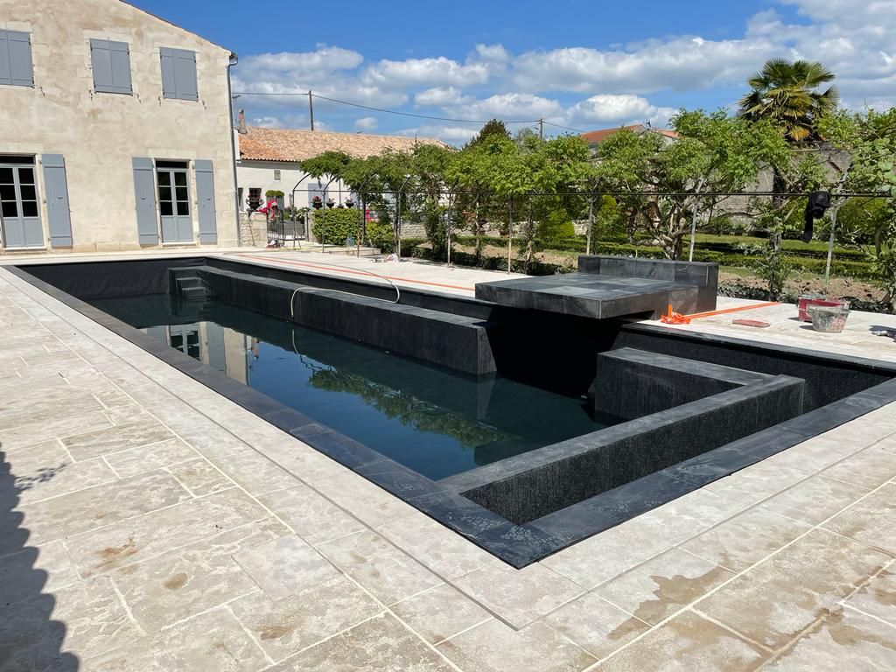
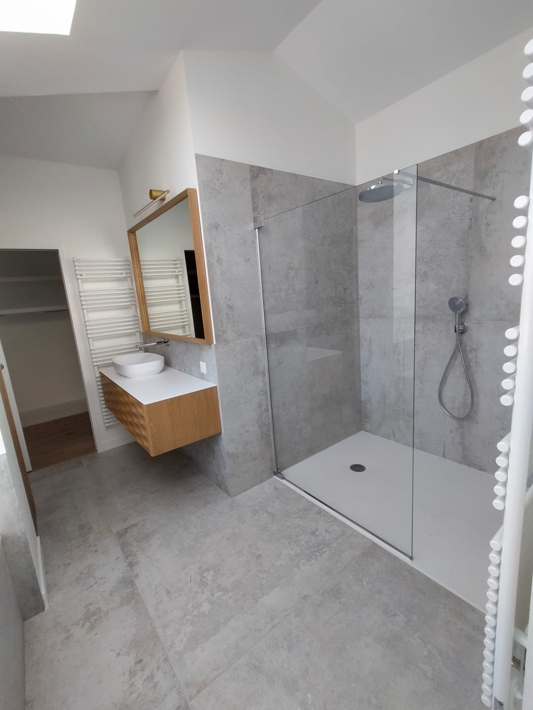
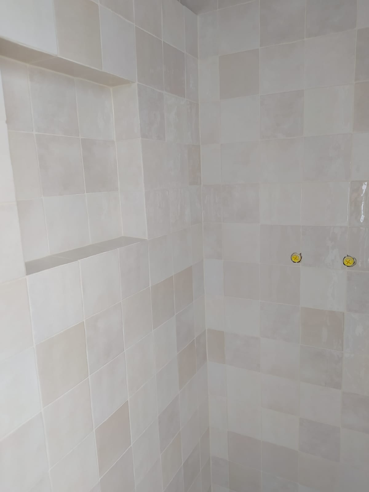
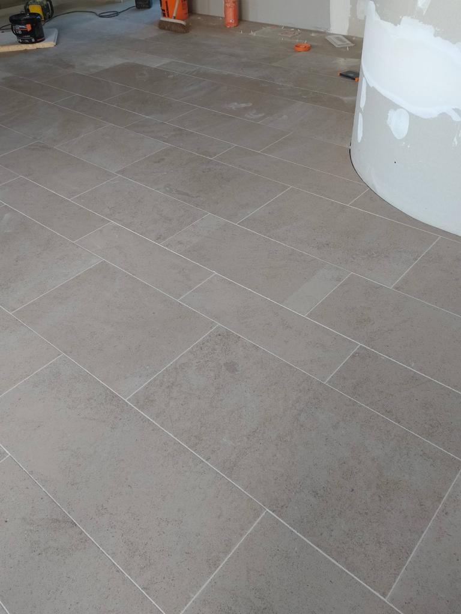
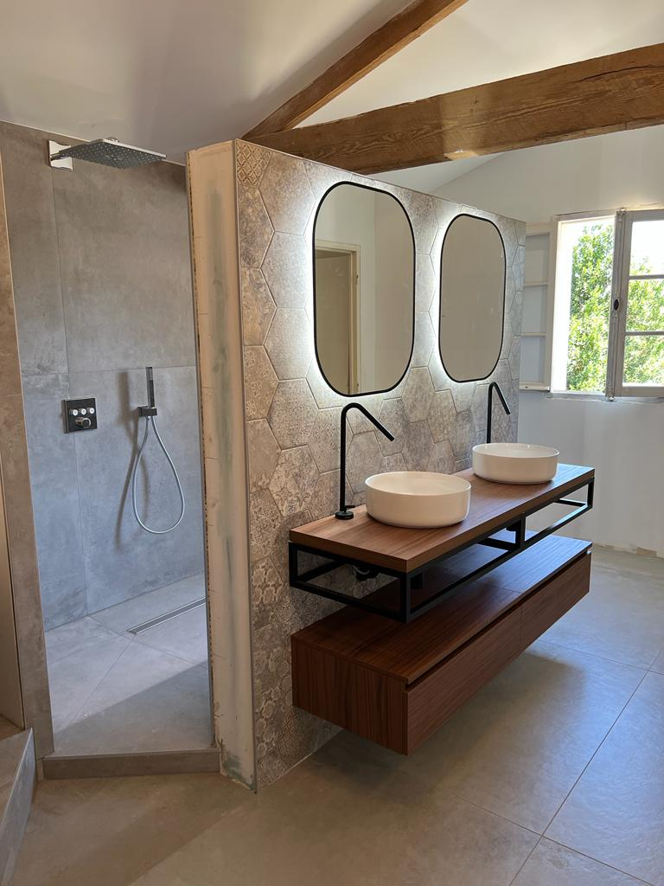
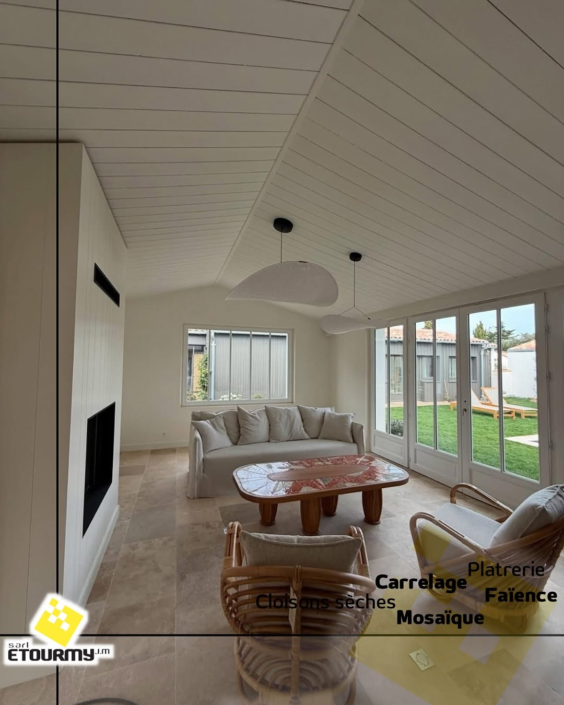
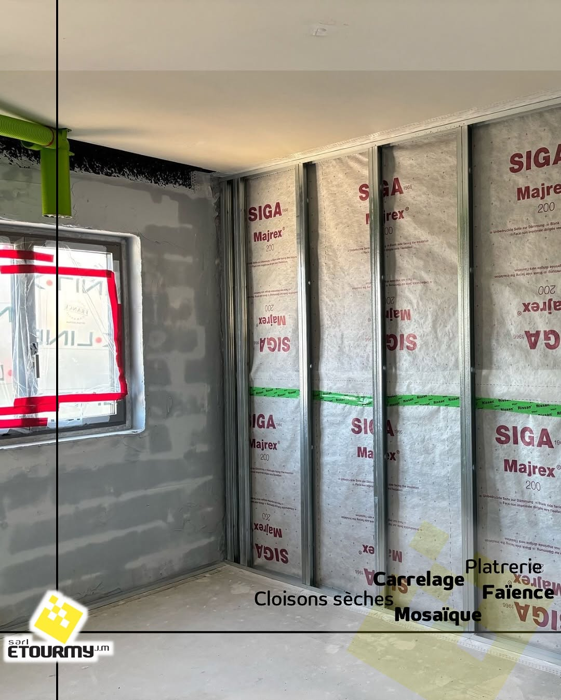
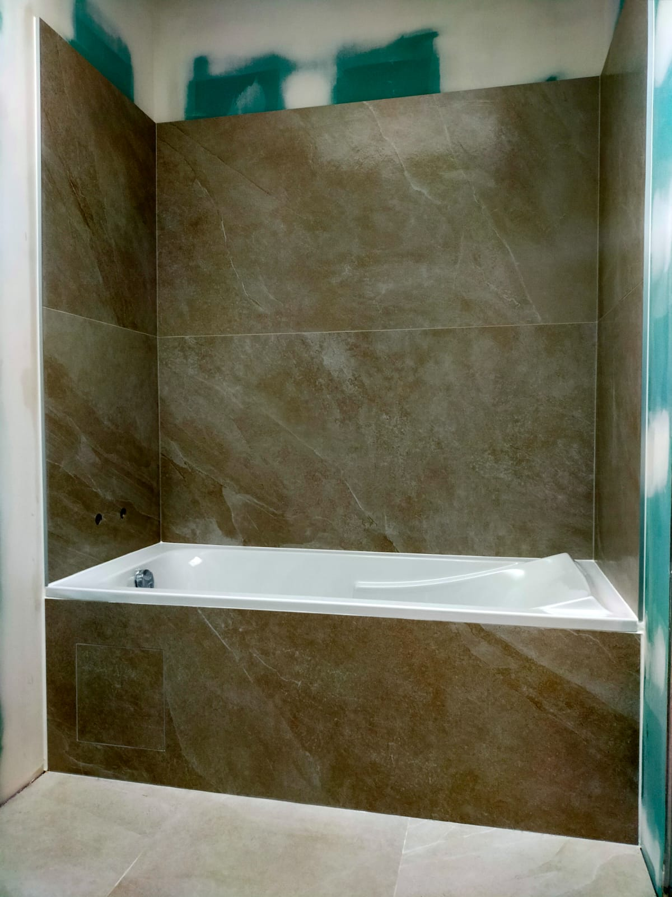

La chape, le carrelage et les cloisons.
Par la même équipe.
Depuis 1978, ETOURMY pose carrelage, faïence, chape et cloisons sur La Rochelle, l'Île de Ré et toute l'Aunis. Une équipe intégrée, sans sous-traitance, et un seul interlocuteur du support à la finition.



- 01Devis sous 48h
- 02Équipe intégrée, zéro sous-traitance
- 03Garantie décennale
- 04Chantier laissé propre
Six métiers, une seule équipe sur le chantier
Neuf et rénovation. Particuliers, résidences secondaires, piscinistes et constructeurs.
Carrelage & faïence
Sol et mur, intérieur et extérieur. Grands formats jusqu'au 120×120, crédence cuisine, plinthes et finitions.
60 – 190 €/m² fourni-posé*Chape liquide & traditionnelle
Anhydrite, fluide, traditionnelle, ragréage. Compatible plancher chauffant, planéité contrôlée avant pose.
20 – 45 €/m²*Carrelage de piscine
Bassin, margelles, plage, mosaïque et pâte de verre. Joints époxy, respect des DTU d'étanchéité.
130 – 220 €/m² en rénovation*Terrasse & dalle sur plot
Grès cérame 20 mm, pierre naturelle, dallage extérieur. Pose sur plots ou collée sur dalle.
45 – 95 €/m²*Salle de bain & douche italienne
Receveur maçonné, étanchéité, pente, caniveau, faïence. Rénovation complète coordonnée.
4 000 – 18 000 € le chantier*Plâtrerie sèche & isolation
Cloisons, doublages, faux plafonds, isolation. Le support que nos carreleurs habillent ensuite.
Sur devis*Fourchettes indicatives, à valider avec ETOURMY avant mise en ligne (voir README).
Pourquoi un seul artisan pour la chape et le carrelage ?
Une chape mal faite, c'est un carrelage qui fissure deux ans plus tard. Quand le chapiste et le carreleur sont deux entreprises différentes, personne ne reprend le chantier : chacun renvoie la faute à l'autre.
Chez ETOURMY, la chape, le carrelage et les cloisons sont faits par la même équipe, sous un seul devis et une seule garantie. S'il y a un problème, il n'y a qu'un numéro à appeler.
Nos derniers chantiers

Pose de carrelage grand format
Ragréage, croisillons de nivellement, jointoiement fin.
Double vasque et douche à l'italienne
Étanchéité, pente, faïence hexagonale, meubles bois sur mesure.
Sol grand format, pièce de vie
Pose sur natte de désolidarisation, calepinage continu.
Doublage et cloisons avant carrelage
Ossature métallique, isolation, le support avant la pose.On vient voir le chantier avant de chiffrer. Toujours.
Visite sur site
Relevé, état du support, contraintes d'accès. Sous 5 jours ouvrés.
Devis chiffré sous 48h
Détaillé par poste, quantités et références de carreaux.
Chantier par notre équipe
Nos salariés, pas de sous-traitance. Photos d'avancement si vous n'êtes pas sur place.
Réception & garantie
Chantier nettoyé, réception à distance possible, décennale.
De La Rochelle à l'Île de Ré, et tout l'Aunis
ETOURMY est basée à Nieul-sur-Mer, à 8 km au nord de La Rochelle et 20 minutes du pont de l'Île de Ré.
« Carrelage sur 60 m² de salon + 2 salles de bain avec faïence. Travail impeccable et livré dans les délais convenus. L'entreprise a été de bons conseils et les poseurs ont effectué un travail minutieux. Rien à redire. »
« Travail de qualité et chantier propre. Ravi d'avoir contacté cette entreprise pour mes travaux. »
« Pro, de bon conseil, réactif, travail très précis avec un magnifique rendu. Je recommande. »

Questions fréquentes
Combien de temps pour recevoir un devis ?
Sous 48h après la visite. On ne chiffre jamais sans avoir vu le chantier.
Intervenez-vous sur l'Île de Ré ?
Oui, c'est une part importante de notre activité. Nous sommes à 20 minutes du pont.
Faites-vous la chape et le carrelage ?
Les deux, avec la même équipe. C'est ce qui évite les litiges entre corps d'état.
Travaillez-vous en neuf et en rénovation ?
Les deux.
Posez-vous du carrelage de piscine ?
Oui : bassin, margelles, plage, mosaïque et pâte de verre.
Comment se passe un chantier en résidence secondaire ?
Photos d'avancement régulières, clés gérées, réception à distance possible.
Dites-nous ce que vous voulez faire poser
Réponse sous 24h. Devis chiffré sous 48h après la visite. Vous pouvez joindre 2 à 4 photos, ça nous fait gagner un déplacement.